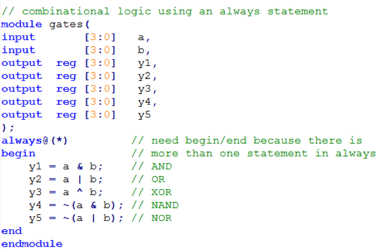

Verilog 语法入门
Verilog HDL 是一种硬件描述语言（HDL：Hardware Description Language），以文本形式来描述数字系统硬件的结构和行为的语言，用它可以表示逻辑电路图、逻辑表达式，还可以表示数字逻辑系统所完成的逻辑功能。Verilog HDL 和 VHDL 是世界上最流行的两种硬件描述语言，都是在 20 世纪 80 年代中期开发出来的。前者由 Gateway Design Automation 公司（该公司于 1989 年被 Cadence 公司收购）开发。两种 HDL 均为 IEEE 标准。
Verilog 可以从五个层次对电路（系统）进行描述，包括：系统级、算法级、寄存器传输级（即 RTL 级）、门级、开关级。我们平时用的最多的为 RTL 级，故 Verilog 代码也经常被称为 RTL 代码。
在笔者看来，掌握一门语言最快速的方法就是在实际应用中去学习，Verilog HDL 也不例外。下面我们就通过一系列实例来学习 Verilog HDL。
1.1 简单组合逻辑电路
对于逻辑表达式：
其电路图如下所示：
Verilog 代码如下：
语法说明
module/endmodule-
表征模块的开始与结束。
example-
模块名可由用户指定，可包含字母、数字及下划线，需以字母开头，区分大小写
assign-
赋值操作关键字，该关键字后可跟一个赋值表达式，该关键字是实现组合逻辑操作的一种主要描述方式。
input/output-
表征该信号的方向，除输入、输出外还有一种
inout（输入输出）型。 - 操作符
-
~按位取反、&按位与、|按位或。
常用操作符及其优先级：
建议大家在写代码时，在适当的地方加上括号，以增加可读性
综合后电路：
上图是综合工具生成的电路图，大家可以自行化简上述电路，看是否等价。
1.2 多 bit 逻辑门
对于下面 5 个逻辑表达式
y1 = a & b;
y2 = a | b;
y3 = a ^ b;
y4 = ~(a & b);
y5 = ~(a | b);
其电路图如下所示：

Verilog 代码为：

语法说明：
[3:0]-
表征该信号的位宽，实例中是推荐写法，
[0:3]、[4:1]等写法也是合法的 //、/* */-
代码注释，增加代码可读性，
//为单行注释，/* */为多行注释
1.3 八输入与门
对于逻辑表达式
y = a[7] & a[6] & a[5] & a[4] & a[3] & a[2] & a[1] & a[0];
其电路图为：
Verilog 代码：
语法说明：
a[7]-
可将一个多位宽信号中的一位或多位以此种方式进行单独处理
&-
按位与、归并与操作，如该操作符只有一个操作数时，则将该操作数的所有位进行相与操作，可以实现与注释部分相同的功能，但写法更简洁。
1.4 一位全加器
对于表达式
{cout, s} = a + b + cin;
其电路图为：

Verilog 代码
语法说明
wire-
线网型数据类型，Verilog 语法中的一种主要数据类型，用于表示线网型信号，与实际电路中的信号连线相对应。wire 是 Verilog 中的默认数据类型，此例中的输入输出信号没有指定数据类型，则默认为 wire 型。除 wire 外，另外一种主要数据类型为
reg，表示寄存器类型数据。 - 内部信号
-
此例中的
p、g为内部信号，可以简化设计，增加代码可读性。
1.5 三态门
电路图
Verilog 代码
语法说明：
z-
高阻态，Verilog 中，信号共有 4 种状态
0、1、x、z，分别表示低电平、高电平、不确定态和高阻态。对于没有进行初始化的信号，一般处于不确定态（x），高阻态表示该信号没有被其他信号驱动，经常用于有多个驱动源的总线型数据上。 4'bz-
数据格式，表示该信号为 4 bit 位宽，用二进制方式表示，对于数据格式的进一步说明，可见下表
1.6 八位两路选择器
电路图：

Verilog 代码：
语法说明：
- 模块例化
-
可通过实例化已经设计好的模块来达到重用模块，简化设计的目的。可将一个模块重用多次，在同一模块中，实例化名称（本例中为 lsbmux、msbmux）可任意指定，但不能相同，也不能使用 Verilog 中的关键字。本例中列举了 Verilog 语法支持的两种实例化方式，推荐使用第二种方式，虽然代码量增加了一些，但增加了可读性，同时降低了出错的风险。
对于第一种模块例化方法，应严格保证实例化模块（lsbmux）中的参数排列顺序与被实例化模块（mux2）的参数排列顺序严格一致。
对于第二种方式点后面是被例化模块（mux2）的接口信号，括号内的是实例化模块（msbmux）的接口信号。
- 位拼接
-
可将一个或多个信号的指定位，拼接成一个新的信号，对于上述表达式，如果 y 是一 12 bit 的信号，则其各位的值为：
verilog a[2] a[1] b[0] b[0] b[0] a[0] 1 0 0 0 1 0 - 下划线
-
数字中间的下划线是为了增加程序可读性，可直接将其忽略。
1.7 D 触发器
电路图：
Verilog 代码：
语法说明：
- 时序逻辑
-
电路具有记忆功能，电路状态不但与当前输入有关，还与前一时刻的状态有关。
- 同步逻辑
-
在同一的时钟信号激励下工作，输出只在时钟的上升沿（或者下降沿）发生变化。
reg-
除 wire 类型外，另外一种常用的数据类型，一般表示寄存器类型数据，不过并不绝对，记住一条原则：在 always 块内被赋值的信号应定义成 reg 型，用 assign 语句赋值的信号应定义成 wire 型。
always-
除 assign 外，另外一种实现赋值操作的关键字，两者都不可嵌套，区别在于，assign 语句只能实现组合逻辑赋值，且一个 assign 语句后面只能跟一条赋值表达式。而 always 即能实现组合逻辑赋值，又能实现时序逻辑赋值操作，且可以包含多条赋值表达式，多条赋值表达式，则应位于 begin/end 对中间。
posedge-
Verilog 关键字，表示上升沿的意思。
always @(posedge clk)表示在 clk 信号的上升沿的时刻，执行 always 块内部的语句，与此相对应的，是表示下降沿的关键字 negedge。凡是带有 posedge 或 negedge 的 always 块，都会被综合成时序逻辑电路。 - 阻塞/非阻塞赋值
-
采用
<=进行赋值的语句，称为“非阻塞赋值”，采用=进行赋值的语句，称为“阻塞赋值”。在 always 块中，阻塞式赋值方式语句执行有先后顺序，而非阻塞赋值语句则是同时执行。因此，在时序逻辑电路中，两种赋值方式可能或综合出不同的电路结构。如下所示

显然，第二种电路才是符合我们预期的设计，为避免出现一些稀奇古怪的电路，我们只需记住以下规则：
-
在组合逻辑电路中，使用阻塞式赋值方式
=。 -
在时序逻辑电路中，使用非阻塞式赋值方式
<=。 -
在同一个 always 块内，只能存在一种赋值方式。
-
一个信号，只能在一个 always 或一个 assign 语句下赋值。
-
原则上来说，一个 always 块内只处理一个或一类信号，不同的信号可在不同的 always 块内处理。
-
always 块内只能对 reg 型信号进行处理，不能对 wire 型数据赋值，也不能实例化模块。
1.8 带同步复位的 D 触发器
Verilog 代码
语法说明：
- 同步复位
-
复位只能发生在在 clk 信号的上升沿，若 clk 信号出现问题，则无法进行复位。
if/else-
always 块中常用的条件判断语句，可以嵌套，有优先级，一般来说，应将复位处理逻辑放在第一个 if 语句下，使其具有最高的优先级，该语句只能在 always 块内使用。另外一种比较常用的条件判断语句是 case。与 if/else 语句不同，case 语句不带优先级
1.9 异步复位电路
Verilog 代码
语法说明：
- 异步复位
-
在 always 的敏感变量列表中，包含了 posedge clk（clk 信号上升沿）和 posedge reset（reset 信号下降沿）两个条件，只要有一个条件发生，便会执行 always 块内的逻辑。复位处理逻辑应具有最高的优先级。
用 always 块实现组合逻辑
Verilog 代码

语法说明：
- always 块内被赋值的信号应定义成 reg 类型，即使此信号在实际电路中是线型。
- always 语句实现组合逻辑应采用阻塞赋值方式。
1.10 七段数码管
电路图
我们最常用的是七段式和八段式 LED 数码管，八段比七段多了一个小数点，其他的基本相同。所谓的八段就是指数码管里有八个小 LED 发光二极管，通过控制不同的 LED 的亮灭来显示出不同的字形。数码管又分为共阴极和共阳极两种类型，其实共阴极就是将八个 LED 的阴极连在一起，让其接地，这样给任何一个 LED 的另一端高电平，它便能点亮。而共阳极就是将八个 LED 的阳极连在一起。其原理如下图
Verilog 代码
语法说明：
case-
case 语句的各个条件之间没有优先级，且各条件应是互斥的。在组合逻辑电路中使用 case 语句最后应加上 default 语句，以防综合出锁存器电路。
1.11 有限状态机（FSM）
有限状态机（以下简称 FSM）在数字电路系统中具有举足轻重的低位，很多控制逻辑都是基于 FSM 来实现的。FSM 在设计实现上，可以分成一段式、两段式、三段式三种。由于三段式具有条理清晰、可读性强，因此多数采用此种设计方式，下面是其电路简图。
我们以设计具有 3 个状态的简单状态机为例来进行讲解。
Verilog 代码：
其中，第一个 always 为 FSM 的第一段；第二个 always 块为 FSM 的第二段；最后的 assign 语句为 FSM 的第三段。如有多个信号，可继续使用 assign 或 always 语句进行处理。
1.12 参数传递
在例化模块时，可以通过参数传递的方式改变被例化模块的部分参数
如要例化一 8 bit 位宽的选择器，则使用默认参数即可，不需进行参数传递
如要例化一 12 bit 位宽的选择器，则可使用如下方式，将参数传递过去
1.14 测试文件
要测试我们设计的模块功能是否正常，最直接的办法就是烧写到 FPGA 芯片中进行验证，但是这种方式往往结果并不直观，且出现问题后也不容易定位。为提高工作效率，我们可通过电脑仿真的方式进行功能验证，待仿真通过后，再烧写到 FPGA 中，这样可以快速排除电路中存在的绝大多数 bug。在电脑上进行仿真，除了我们设计的功能模块之外，还需要另一模块——testbench，用于产生被测模块所需的激励信号。由于 testbench 只是用于电脑端的仿真，而不需要最终综合成电路，因此其写法更加灵活，可以使用 verilog 语法中的一些不可综合的语句，如 initial、#、$display、$readmemb、forever 等。
假设我们的被测模块完成以下功能
其 verilog 代码为：
1.14.1 简单测试文件
最简单的测试文件可以写成如下形式：
语法说明：
testbench 文件一般不包含任何输入输出信号
将被测模块实例化，被测模块的输入信号定义成 reg 类型，输出信号定义成 wire 类型。
initial-
通过 initial 块构造输入信号的波形，同一 initial 块内部的语句是串行执行的，多个 initial 块之间并发执行。
1.14.2 自检测试文件
带自检功能的测试文件如下所示，可以对输出结果进行判断，并打印错误信息
模块的输入信号给定之后，就有有结果输出，将实际输出结果于预期结果做比较，如果不同，则打印出错误信息。
1.14.3 测试向量
通过测试向量进行仿真
将输入信号的各种组合以及对应的输出结果构成一测试向量，则每个向量中都包含了一种输入状态，以及该状态下的期望输出结果
将该向量导入一内存数组
构造一时钟信号
在时钟的上升沿，将一个向量赋值给被测模块输入端，并在时钟的下降沿对被测模块输出与期望输出结果进行对比，如果不相同，则记录下该向量，至此向量全部测试完毕。
向量测试文件（example.tv）包含 a、b、c 以及 y_expected
000_1
001_0
010_0
011_0
100_1
101_1
110_0
111_0
测试文件
前面介绍了三种测试方法，三种方法各有其优缺点。
简单测试文件编写简单，容易上手，但需要人工判断仿真结果的正确性；
带自检的测试文件可以将错误信息打印出来，但编写稍微复杂一些，且激励波形仍需通过人工输入代码来完成；
测试向量法测试文件编写最为复杂，还需要编写一个用于跟被测模块结果进行比较的黄金模型，但此种方法测试最为充分，且后续维护起来也最容易。